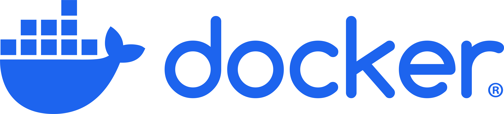
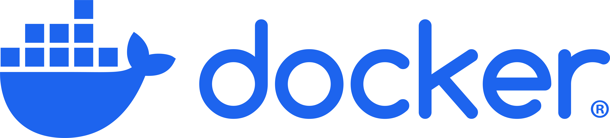

Asaf Maoz -Professional Hub
Meet Asaf Maoz, a dedicated backend software developer specializing in innovative solutions that tackle real-world challenges.
Explore my journey, diverse projects I've undertaken and discover how I can bring value to your team.

Projects, Blog Posts and more
Showcasing websites, tools, innovative backend solutions and fun projects.


Some of the Tools, Frameworks, Infrastructure and resources I am experienced with.


 


Latest Career Milestones.
2022
Joined Yahoo IL, Senior Software Developer, designing and migrating key components to AWS and GCP.
2020
Joined GE Healthcare, Senior Software Developer, design and development a serverless medical application key backend components.
2017
Software Developer at Check Point, improved infrastructure and API’s.